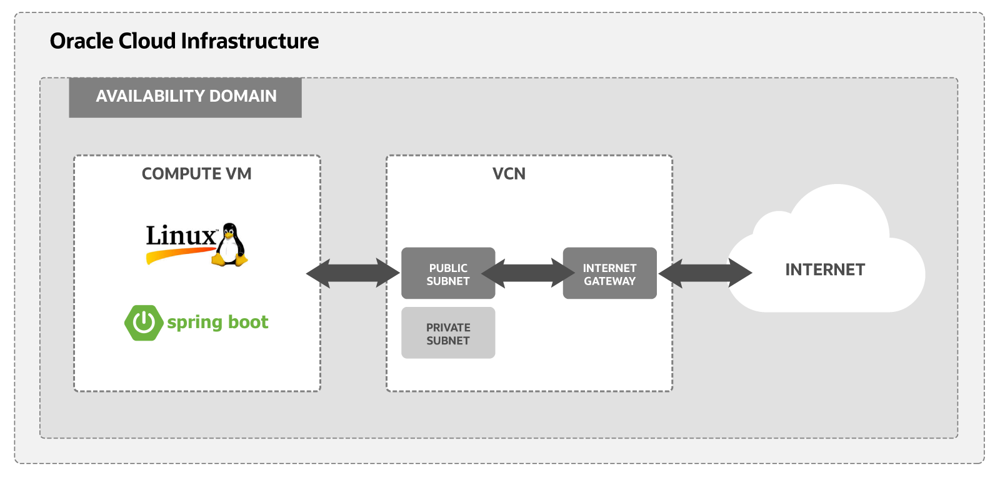

<div class="initial-content">
  <div id="main" role="main">

  <article class="page has-sidebar has-slides" itemscope itemtype="https://schema.org/CreativeWork">
    <meta itemprop="headline" content="Install Spring Boot on an compute instance on Oracle Cloud">
    
    <meta itemprop="datePublished" content="2021-09-20T15:30:00+00:00">
    


    <header>
      <h1 id="page-title" class="page__title" itemprop="headline">Install Spring Boot on an compute instance on Oracle Cloud
</h1>
      


    </header>

    <section class="page__content" itemprop="text">
      
        <!-- <aside class="sidebar__right sticky">
          <nav class="slides-nav"><ul><li class="active" data-target-slide="0"><a href="javascript:cool.slides.goToSlide(0)">Intro</a></li>
<li data-target-slide="1"><a href="javascript:cool.slides.goToSlide(1)">Before you begin</a></li>
<li data-target-slide="2"><a href="javascript:cool.slides.goToSlide(2)">Set up a compartment for development</a></li>
<li data-target-slide="3"><a href="javascript:cool.slides.goToSlide(3)">Install your Oracle Linux Instance</a></li>
<li data-target-slide="4"><a href="javascript:cool.slides.goToSlide(4)">Enable internet access</a></li>
<li data-target-slide="5"><a href="javascript:cool.slides.goToSlide(5)">Install and configure Spring Boot</a></li>
<li data-target-slide="6"><a href="javascript:cool.slides.goToSlide(6)">What's Next</a></li></ul></nav>
        </aside> -->
      

        <div class="slides" id="slideshow">

  <div class="slide active" id="slide-0">

    <h2 class="slide__title"><span class="slide__num">1</span> Introduction</h2>

    <p>In this tutorial, you’ll use an Oracle Cloud Infrastructure Free Tier account to set up an Oracle Linux compute instance, install a Spring Boot application, and then configure it to be accessible from the internet. This tutorial also covers all the steps necessary to set up a virtual network for your host and connect that host to the internet.</p>

    <p>Key tasks include how to:</p>

    <ul>
      <li>Set up a compartment for your development work.</li>
      <li>Install your Oracle Linux instance and connect it to your Virtual Cloud Network (VCN).
        <ul>
          <li>Set up an Oracle Cloud Infrastructure virtual cloud network and related network services required for your host to connect to the internet.</li>
          <li>Set up <code class="language-plaintext highlighter-rouge">ssh</code> encryption keys to access your Oracle Linux Server.</li>
          <li>Configure ingress rules for your VCN.</li>
          <li>Configure Spring Boot on your instance.</li>
          <li>Connect to your instance from the internet.</li>
        </ul>
      </li>
    </ul>

    <p>Below is a simplified diagram of the setup for your Linux instance.</p>

    <p></p>

    <p>For additional information, see:</p>

    <ul>
      <li><a href="https://docs.oracle.com/iaas/Content/GSG/Tasks/signingup.htm">Signing Up for Oracle Cloud Infrastructure</a></li>
      <li><a href="https://docs.oracle.com/iaas/Content/GSG/Reference/overviewworkflow.htm">Launch your first Linux VM</a></li>
    </ul>

    <div class="slide__nav"><a href="javascript:cool.slides.goToSlide(1)" class="slides__btn--begin">Begin &raquo;</a></div>

  </div>

  <div class="slide" id="slide-1">

    <h2 class="slide__title"><span class="slide__num">2</span> Before you begin</h2>

    <p>To successfully complete this tutorial, you must have the following:</p>

    <h3 id="requirements">Requirements</h3>

    <ul>
      <li>An Oracle Cloud Infrastructure Free Tier account. <a href="https://signup.cloud.oracle.com/?language=en&amp;sourceType=:ow:de:te::::RC_WWMK211116P00260:DotBuildGetStarted&amp;intcmp=:ow:de:te::::RC_WWMK211116P00260:DotBuildGetStarted">Start for Free</a>.</li>
      <li>A MacOS, Linux, or Windows computer with <code class="language-plaintext highlighter-rouge">ssh</code> support installed.</li>
    </ul>

    <div class="slide__nav"><a href="javascript:cool.slides.goToSlide(0)">&laquo; Back</a> <a href="javascript:cool.slides.goToSlide(2)">Continue &raquo;</a></div>

  </div>

  <div class="slide" id="slide-2">

    <h2 class="slide__title"><span class="slide__num">3</span> Set up a compartment for development</h2>

    <p>Configure a compartment for your development.</p>

    <h3 id="create-a-compartment">Create a compartment</h3>

    <p>Create a compartment for the resources that you create in this tutorial.</p>

    <ol>
      <li>Log in to the Oracle Cloud Infrastructure <strong>Console</strong>.</li>
      <li>Open the navigation menu and select <strong>Identity &amp; Security</strong>. Under <strong>Identity</strong>, select <strong>Compartments</strong>.</li>
      <li>Select <strong>Create Compartment</strong>.</li>
      <li>Fill in the following information:
        <ul>
          <li><strong>Name:</strong> <code class="language-plaintext highlighter-rouge">&lt;your-compartment-name&gt;</code></li>
          <li><strong>Description:</strong> <code class="language-plaintext highlighter-rouge">Compartment for &lt;your-description&gt;.</code></li>
          <li><strong>Parent Compartment:</strong> <code class="language-plaintext highlighter-rouge">&lt;your-tenancy&gt;(root)</code></li>
        </ul>
      </li>
      <li>Select <strong>Create Compartment</strong>.</li>
    </ol>

    <p><strong>Reference:</strong> <a href="https://docs.oracle.com/iaas/Content/Identity/Tasks/managingcompartments.htm#To">Create a compartment</a></p>

    <div class="slide__nav"><a href="javascript:cool.slides.goToSlide(1)">&laquo; Back</a> <a href="javascript:cool.slides.goToSlide(3)">Continue &raquo;</a></div>

  </div>

  <div class="slide" id="slide-3">

    <h2 class="slide__title"><span class="slide__num">4</span> Install your Oracle Linux Instance</h2>

    <p>Use the <strong>Create a VM Instance</strong> wizard to create a new compute instance.</p>

    <p>The wizard does several things when installing the instance:</p>

    <ul>
      <li>Creates and installs a compute instance running Oracle Linux.</li>
      <li>Creates a VCN with the required subnet and components needed to connect your Oracle Linux instance to the internet.</li>
      <li>Creates an <code class="language-plaintext highlighter-rouge">ssh</code> key pair you use to connect to your instance.</li>
    </ul>

    <h3 id="review-installation-steps">Review installation steps</h3>

    <p>To get started installing your instance with the <strong>Create a VM Instance</strong> wizard, follow these steps:</p>

    <ol>
      <li>
        <p>From the main landing page, select <strong>Create a VM instance</strong> wizard. </p>

        <p>The <strong>Create Compute Instance</strong> page is displayed. It has a section for <strong>Placement</strong>, Image and shape, <strong>Networking</strong>, <strong>Add SSH keys</strong>, and <strong>Boot volume</strong>.</p>
      </li>
      <li>
        <p>Choose the <strong>Name</strong> and <strong>Compartment</strong> for the instance.</p>

        <p><strong>Initial Options</strong></p>

        <ul>
          <li><strong>Name:</strong> <code class="language-plaintext highlighter-rouge">&lt;name-for-the-instance&gt;</code></li>
          <li><strong>Create in compartment:</strong> <code class="language-plaintext highlighter-rouge">&lt;your-compartment&gt;</code></li>
        </ul>

        <p>Either enter a value for the <strong>Name</strong> or leave the system-supplied default.</p>
      </li>
      <li>
        <p>Review the <strong>Placement</strong> settings. Accept the default values provided by the wizard.</p>

        <blockquote class="notice">
          <p>The following is sample data. The actual values change over time and differ from data center to data center.</p>
        </blockquote>

        <p><strong>Placement</strong></p>

        <ul>
          <li><strong>Availability domain:</strong> AD-1</li>
          <li><strong>Capacity type:</strong> On-demand capacity.</li>
          <li><strong>Fault domain:</strong> Oracle chooses the best placement.</li>
        </ul>

        <blockquote class="notice">
          <p>For Free Tier, use the <strong>Always Free Eligible</strong> option for <strong>Availability domain</strong>.</p>
        </blockquote>
      </li>
      <li>
        <p>Review the Image and shape settings. Accept the default values provided by the wizard.</p>

        <blockquote class="notice">
          <p>The following is sample data. The actual values change over time and differ from data center to data center.</p>
        </blockquote>

        <p><strong>Image:</strong></p>

        <ul>
          <li><strong>Image:</strong> Oracle Linux 7.9</li>
          <li><strong>Image build:</strong> 2020.11.10-1</li>
        </ul>

        <p><strong>Shape:</strong></p>

        <ul>
          <li><strong>Shape:</strong> VM.Standard.E2.1.Micro</li>
          <li><strong>OCPU count:</strong> 1</li>
          <li><strong>Memory (GB):</strong> 1</li>
          <li><strong>Network bandwidth (Gbps):</strong> 0.48</li>
        </ul>

        <blockquote class="notice">
          <p>For Free Tier, use <strong>Always Free Eligible</strong> for the <strong>Shape</strong> options.</p>
        </blockquote>
      </li>
      <li>
        <p>Review the <strong>Networking</strong> settings. Aceept the default values provided by the wizard.</p>

        <blockquote class="notice">
          <p>The following is sample data. The actual values change over time and differ from data center to data center.</p>
        </blockquote>

        <ul>
          <li><strong>Virtual cloud network:</strong> <code class="language-plaintext highlighter-rouge">vcn-&lt;date&gt;-&lt;time&gt;</code></li>
          <li><strong>Subnet:</strong> <code class="language-plaintext highlighter-rouge">vcn-&lt;date&gt;-&lt;time&gt;</code></li>
          <li><strong>Assign a public IPv4 address:</strong> Yes</li>
        </ul>
      </li>
      <li>
        <p>Review the <strong>Add SSH keys</strong> settings. Accept the default values provided by the wizard.</p>

        <ul>
          <li>Select the <strong>Generate a key pair for me</strong> option.</li>
          <li>Select both the <strong>Save Private Key</strong> and <strong>Save Public Key</strong> options to save the private and public SSH keys for this compute instance.</li>
        </ul>

        <p>If you want to use your own SSH keys, select one of the options to provide your public key.</p>

        <blockquote class="notice">
          <p><strong>Put your private and public key files in a safe location.</strong> You cannot retrieve your SSH keys after the compute instance has been created.</p>
        </blockquote>
      </li>
      <li>
        <p>Review the <strong>Boot volume</strong> settings. Accept the default values provided by the wizard.</p>

        <p>Leave all check boxes <strong>unchecked</strong>.</p>
      </li>
      <li>
        <p>Select <strong>Create</strong> to create the instance. Provisioning the system might take several minutes.
You have successfully created an Oracle Linux instance.</p>
      </li>
    </ol>

    <div class="slide__nav"><a href="javascript:cool.slides.goToSlide(2)">&laquo; Back</a> <a href="javascript:cool.slides.goToSlide(4)">Continue &raquo;</a></div>

  </div>

  <div class="slide" id="slide-4">

    <h2 class="slide__title"><span class="slide__num">5</span> Enable internet access</h2>

    <p>The <strong>Create a VM Instance</strong> wizard automatically creates a VCN for your instance. You must manually add an ingress rule to your subnet to allow internet connections on port 8080.</p>

    <h3 id="create-an-ingress-rule-for-your-vcn">Create an ingress rule for your VCN</h3>

    <p>Follow these steps to select your VCN’s public subnet and add the ingress rule.</p>

    <ol>
      <li>Open the navigation menu and select <strong>Networking</strong>.</li>
      <li>Select <strong>Virtual Cloud Networks</strong>.</li>
      <li>Select the VCN you created with your compute instance.</li>
      <li>
        <p>With your new VCN displayed, select <code class="language-plaintext highlighter-rouge">&lt;your-subnet-name&gt;</code> subnet link.</p>

        <p>The public subnet information is displayed with the <strong>Security Lists</strong> at the bottom of the page. A link to the <strong>Default Security List</strong> for your VCN is displayed.</p>
      </li>
      <li>
        <p>Select the <strong>Default Security List</strong> link.</p>

        <p>The default <strong>Ingress Rules</strong> for your VCN are displayed.</p>
      </li>
      <li>
        <p>Select <strong>Add Ingress Rules</strong>.</p>

        <p>An <strong>Add Ingress Rules</strong> dialog is displayed.</p>
      </li>
      <li>
        <p>Fill in the ingress rule with the following information.</p>

        <p>Fill in the ingress rule as follows:</p>

        <ul>
          <li><strong>Stateless:</strong> Checked</li>
          <li><strong>Source Type:</strong> CIDR</li>
          <li><strong>Source CIDR:</strong> 0.0.0.0/0</li>
          <li><strong>IP Protocol:</strong> TCP</li>
          <li><strong>Source port range:</strong> (leave-blank)</li>
          <li><strong>Destination Port Range:</strong> 8080</li>
          <li><strong>Description:</strong> Allow HTTP connections</li>
        </ul>
      </li>
      <li>
        <p>Select <strong>Add Ingress Rule</strong>.</p>

        <p>Now HTTP connections are allowed. Your VCN is configured for Spring Boot.</p>

        <p>You have successfully created an ingress rule that makes your instance available from the internet.</p>
      </li>
    </ol>

    <div class="slide__nav"><a href="javascript:cool.slides.goToSlide(3)">&laquo; Back</a> <a href="javascript:cool.slides.goToSlide(5)">Continue &raquo;</a></div>

  </div>

  <div class="slide" id="slide-5">

    <h2 class="slide__title"><span class="slide__num">6</span> Install and configure Spring Boot</h2>

    <p>Before the Spring Boot application is ready to use, you first configure the instance you created previously and then install 3 software packages: Git, OpenJDK 8, and Maven 3.6.</p>

    <h3 id="before-you-begin-the-spring-boot-set-up">Before you begin the Spring Boot set up</h3>

    <h4 id="configure-the-port-for-your-instance">Configure the port for your instance</h4>

    <ol>
      <li>Open the navigation menu and select <strong>Compute</strong>. Under <strong>Compute</strong>, select <strong>Instances</strong>.</li>
      <li>
        <p>Select the link to the instance you created earlier.</p>

        <p>From the <strong>Instance Details</strong> page look under the <strong>Instance Access</strong> section. Save the public IP address the system created for you. You use this IP address to connect to your instance.</p>
      </li>
      <li>Open a <strong>Terminal</strong> or <strong>Command Prompt</strong> window.</li>
      <li>Navigate to the directory where you stored the <code class="language-plaintext highlighter-rouge">ssh</code> encryption keys you created.</li>
      <li>
        <p>Connect to your instance with the SSH command</p>

        <div class="language-console highlighter-rouge"><div class="highlight"><pre class="highlight"><code><span class="gp"> ssh -i _&lt;your-private-key-file&gt;</span>_ opc@_&lt;x.x.x.x&gt;_
</code></pre></div>        </div>

        <p>Since you identified your public key when you created the instance, this command logs you into your instance. You can now issue <code class="language-plaintext highlighter-rouge">sudo</code> commands to install and start your server.</p>
      </li>
      <li>
        <p>Enable an HTTP connection on port 8080.</p>

        <div class="language-console highlighter-rouge"><div class="highlight"><pre class="highlight"><code><span class="go"> sudo firewall-cmd --permanent --add-port=8080/tcp
 sudo firewall-cmd --reload
</span></code></pre></div>        </div>

        <p>The firewall is configured for Spring Boot.</p>
      </li>
    </ol>

    <h4 id="install-git">Install Git</h4>

    <p>Install Git v2 from the <a href="https://ius.io/">IUS Community Project</a>. On the site, navigate to the current version of the Git core package and then download to a local <code class="language-plaintext highlighter-rouge">~/temp</code> directory.</p>

    <p>Downloading the Git RPM looks similar to the following:</p>

    <div class="language-console highlighter-rouge"><div class="highlight"><pre class="highlight"><code><span class="go"> cd
 mkdir temp
 cd ~/temp
 wget https://repo.ius.io/7/x86_64/packages/g/git224-core-2.24.2-1.el7.ius.x86_64.rpm                        
</span></code></pre></div>    </div>

    <p>Once the Git RPM download has completed, install the RPM.</p>

    <ol>
      <li>
        <p>Install the RPM with <code class="language-plaintext highlighter-rouge">yum</code>.</p>

        <div class="language-console highlighter-rouge"><div class="highlight"><pre class="highlight"><code><span class="go"> sudo yum install git224-core-2.24.2-1.el7.ius.x86_64.rpm
</span></code></pre></div>        </div>
      </li>
      <li>
        <p>Test for sucessful install.</p>

        <div class="language-console highlighter-rouge"><div class="highlight"><pre class="highlight"><code><span class="go"> git --version
</span></code></pre></div>        </div>

        <p>If the installation was successful, <code class="language-plaintext highlighter-rouge">git --version</code> will echo something similar to the following:</p>

        <div class="language-console highlighter-rouge"><div class="highlight"><pre class="highlight"><code><span class="go"> git version 2.24.2
</span></code></pre></div>        </div>
      </li>
    </ol>

    <p>Git is installed.</p>

    <h4 id="install-openjdk-8">Install OpenJDK 8</h4>

    <ol>
      <li>
        <p>Install OpenJDK 8 using <code class="language-plaintext highlighter-rouge">yum</code>.</p>

        <div class="language-console highlighter-rouge"><div class="highlight"><pre class="highlight"><code><span class="go"> sudo yum install java-1.8.0-openjdk-devel
 java -version
</span></code></pre></div>        </div>
      </li>
      <li>
        <p>Set <code class="language-plaintext highlighter-rouge">JAVA_HOME</code> in <code class="language-plaintext highlighter-rouge">.bashrc</code>.</p>

        <ol>
          <li>
            <p>Update .bashrc:</p>

            <div class="language-console highlighter-rouge"><div class="highlight"><pre class="highlight"><code><span class="go">vi ~/.bashrc
</span></code></pre></div>            </div>

            <p>In the file, append the following text and save the file:</p>

            <div class="language-bash highlighter-rouge"><div class="highlight"><pre class="highlight"><code><span class="c"># set JAVA_HOME</span>
<span class="nb">export </span><span class="nv">JAVA_HOME</span><span class="o">=</span>/etc/alternatives/java_sdk
</code></pre></div>            </div>
          </li>
          <li>
            <p>Activate the preceding command in the current window.</p>

            <div class="language-console highlighter-rouge"><div class="highlight"><pre class="highlight"><code><span class="go">source ~/.bashrc
</span></code></pre></div>            </div>
          </li>
        </ol>
      </li>
    </ol>

    <p>Java is installed.</p>

    <h4 id="install-maven-36">Install Maven 3.6</h4>

    <p>Install Maven from an Apache mirror. Go to the main Maven site’s <a href="https://maven.apache.org/">download page</a>. Get the URL for the latest version and download with wget.</p>

    <ol>
      <li>
        <p>Download the Maven zip file.
For example:</p>

        <div class="language-console highlighter-rouge"><div class="highlight"><pre class="highlight"><code><span class="go"> wget http://apache.mirrors.pair.com/maven/maven-3/3.6.3/binaries/apache-maven-3.6.3-bin.tar.gz
</span></code></pre></div>        </div>
      </li>
      <li>
        <p>Extract the program files.</p>

        <div class="language-console highlighter-rouge"><div class="highlight"><pre class="highlight"><code><span class="go"> sudo tar xvfz apache-maven-3.6.3-bin.tar.gz
</span></code></pre></div>        </div>
      </li>
      <li>
        <p>Install the program files by moving the files to the <code class="language-plaintext highlighter-rouge">/opt</code> directory.</p>

        <div class="language-console highlighter-rouge"><div class="highlight"><pre class="highlight"><code><span class="go"> sudo mv apache-maven-3.6.3 /opt/
</span></code></pre></div>        </div>
      </li>
      <li>
        <p>Add the Maven path <code class="language-plaintext highlighter-rouge">/opt/apache-maven-3.6.3/bin</code> to your <code class="language-plaintext highlighter-rouge">PATH</code> environment variable and activate Maven by sourcing your <code class="language-plaintext highlighter-rouge">.bashrc</code>.</p>

        <div class="language-console highlighter-rouge"><div class="highlight"><pre class="highlight"><code><span class="go"> vi ~/.bashrc
</span></code></pre></div>        </div>

        <p>Add <code class="language-plaintext highlighter-rouge">export PATH=$PATH:/opt/apache-maven-3.6.3/bin</code> and save.</p>

        <div class="language-console highlighter-rouge"><div class="highlight"><pre class="highlight"><code><span class="go"> source ~/.bashrc
</span></code></pre></div>        </div>
      </li>
    </ol>

    <p>Maven is ready to use.</p>

    <h3 id="build-your-spring-boot-application">Build your Spring Boot application</h3>

    <p>Follow these steps to set up your Spring Boot application:</p>

    <ol>
      <li>
        <p>From your home directory, check out the Spring Boot Docker guide with Git:</p>

        <div class="language-console highlighter-rouge"><div class="highlight"><pre class="highlight"><code><span class="go"> git clone http://github.com/spring-guides/gs-spring-boot-docker.git
</span></code></pre></div>        </div>
      </li>
      <li>Navigate to the <code class="language-plaintext highlighter-rouge">gs-spring-boot-docker/initial</code> directory.</li>
      <li>Edit the <code class="language-plaintext highlighter-rouge">Application.java</code> file located in <code class="language-plaintext highlighter-rouge">src/main/java/hello/</code>.</li>
      <li>
        <p>Update <code class="language-plaintext highlighter-rouge">Application.java</code> with the following:</p>

        <div class="language-java highlighter-rouge"><div class="highlight"><pre class="highlight"><code> <span class="kn">package</span> <span class="nn">hello</span><span class="o">;</span>
    
 <span class="kn">import</span> <span class="nn">org.springframework.boot.SpringApplication</span><span class="o">;</span>
 <span class="kn">import</span> <span class="nn">org.springframework.boot.autoconfigure.SpringBootApplication</span><span class="o">;</span>
 <span class="kn">import</span> <span class="nn">org.springframework.web.bind.annotation.RequestMapping</span><span class="o">;</span>
 <span class="kn">import</span> <span class="nn">org.springframework.web.bind.annotation.RestController</span><span class="o">;</span>
    
 <span class="nd">@SpringBootApplication</span>
 <span class="nd">@RestController</span>
 <span class="kd">public</span> <span class="kd">class</span> <span class="nc">Application</span> <span class="o">{</span>
    
     <span class="nd">@RequestMapping</span>
     <span class="kd">public</span> <span class="nc">String</span> <span class="nf">home</span><span class="o">(){</span>
         <span class="k">return</span> <span class="s">"&lt;h1&gt;Spring Boot Hello World!&lt;/h1&gt;"</span><span class="o">;</span>
     <span class="o">}</span>
        
     <span class="kd">public</span> <span class="kd">static</span> <span class="kt">void</span> <span class="nf">main</span><span class="o">(</span><span class="nc">String</span><span class="o">[]</span> <span class="n">args</span><span class="o">)</span> <span class="o">{</span>
         <span class="nc">SpringApplication</span><span class="o">.</span><span class="na">run</span><span class="o">(</span><span class="nc">Application</span><span class="o">.</span><span class="na">class</span><span class="o">,</span> <span class="n">args</span><span class="o">);</span>
     <span class="o">}</span>
        
 <span class="o">}</span>
</code></pre></div>        </div>
      </li>
      <li>Save the file.</li>
      <li>
        <p>Use Maven to build the application.</p>

        <div class="language-console highlighter-rouge"><div class="highlight"><pre class="highlight"><code><span class="go"> mvn package
</span></code></pre></div>        </div>

        <p>If the build is successful, Maven will echo:</p>

        <div class="language-console highlighter-rouge"><div class="highlight"><pre class="highlight"><code><span class="go"> [INFO] BUILD SUCCESS
</span></code></pre></div>        </div>
      </li>
      <li>
        <p>Run the application.</p>

        <div class="language-console highlighter-rouge"><div class="highlight"><pre class="highlight"><code><span class="go"> java -jar target/gs-spring-boot-docker-0.1.0.jar
</span></code></pre></div>        </div>
      </li>
      <li>
        <p>Test your application from the command line or a browser.</p>

        <ul>
          <li>
            <p>From a new terminal, connect to your instance with your SSH keys and test with curl:</p>

            <div class="language-console highlighter-rouge"><div class="highlight"><pre class="highlight"><code><span class="go">  curl -X GET http://localhost:8080
</span></code></pre></div>            </div>
          </li>
          <li>
            <p>From your browser, connect to the public IP address assigned to your instance: <code class="language-plaintext highlighter-rouge">http://&lt;x.x.x.x&gt;:8080</code>.</p>
          </li>
        </ul>

        <p>On either your instance or in your browser, you see</p>
        <blockquote>
          <p><strong>Spring Boot Hello World!</strong></p>
        </blockquote>
      </li>
    </ol>

    <p>Congratulations! You have successfully created a Spring Boot application on your instance.</p>

    <div class="slide__nav"><a href="javascript:cool.slides.goToSlide(4)">&laquo; Back</a> <a href="javascript:cool.slides.goToSlide(6)">Continue &raquo;</a></div>

  </div>

  <div class="slide" id="slide-6">

    <h2 class="slide__title"><span class="slide__num">7</span> What's Next</h2>

    <p>You have successfully installed and deployed a Spring Boot application on Oracle Cloud Infrastructure using a Linux instance.</p>

    <p>To explore more information about development with Oracle products:</p>

    <ul>
      <li><a href="https://developer.oracle.com/">Oracle Developers Portal</a></li>
      <li><a href="https://www.oracle.com/cloud/">Oracle Cloud Infrastructure</a></li>
    </ul>

    <div class="slide__nav"><a href="javascript:cool.slides.goToSlide(5)">&laquo; Back</a></div>

  </div>

</div>


          <div class="sidebar sticky">
    <!-- <p><strong>Tags:</strong> <span class="tags">

            
            <a class="animated-link tag" href="/topics/oci">oci</a>
            <a class="animated-link tag" href="/topics/java">java</a>
            <a class="animated-link tag" href="/topics/always-free">always-free</a>
            <a class="animated-link tag" href="/topics/back-end">back-end</a>
            <a class="animated-link tag" href="/topics/spring">spring</a>
            </span>
    </p> -->
  
  
  
  

  </div>


      </section>

      <footer class="page__meta">
        
        


        

  <p class="page__date"><strong><i class="fas fa-fw fa-calendar-alt" aria-hidden="true"></i> Updated:</strong> <time datetime="2021-09-20T15:30:00+00:00">September 20, 2021</time></p>


      </footer>
    </div>

  </article>
</div>

</div>

